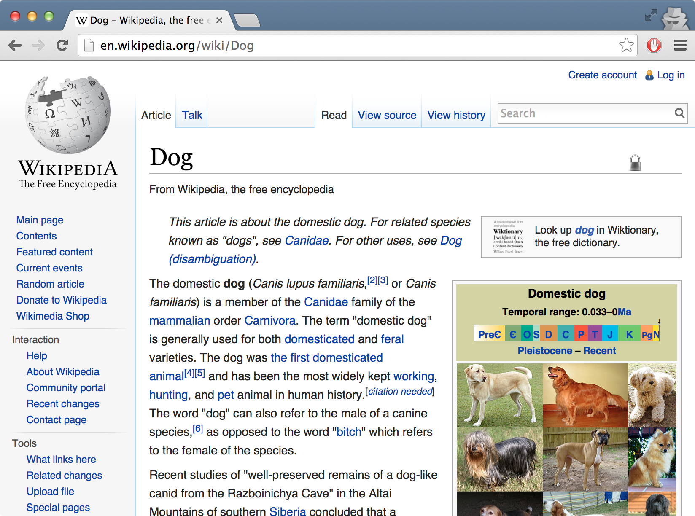
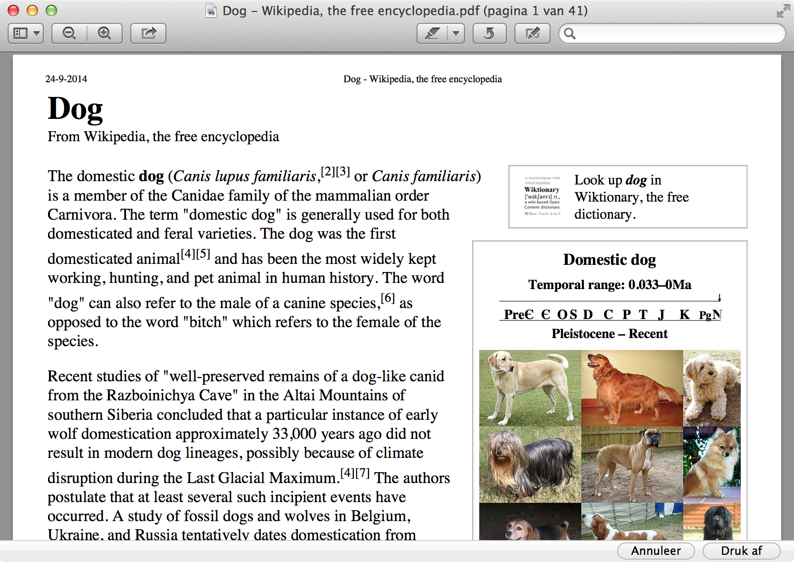

Je kent het vast wel: je print een webpagina uit en het resultaat is een rommel van lijntjes, kleurvlakken, menu items, en als je geluk hebt ook het gedeelte wat je eigenlijk wilt printen. Met speciale print stijlregels zorg je ervoor dat dit bij jouw website niet gebeurd.
Print stijlregels kan je aangeven door ze in een @media print { } blok te zetten in je CSS.
body {
color: red;
}
@media print {
body {
color: black;
}
}
Normaal is deze tekst rood, maar niet als je hem print!
Print stijlregels worden toegepast op het moment dat je het document uitprint. Vaak staan hier dan regels in om navigatie elementen en achtergrondkleuren weg te halen.
Wikipedia heeft een mooi voorbeeld van hoe een webpagina kan veranderen als je hem afdrukt:
 